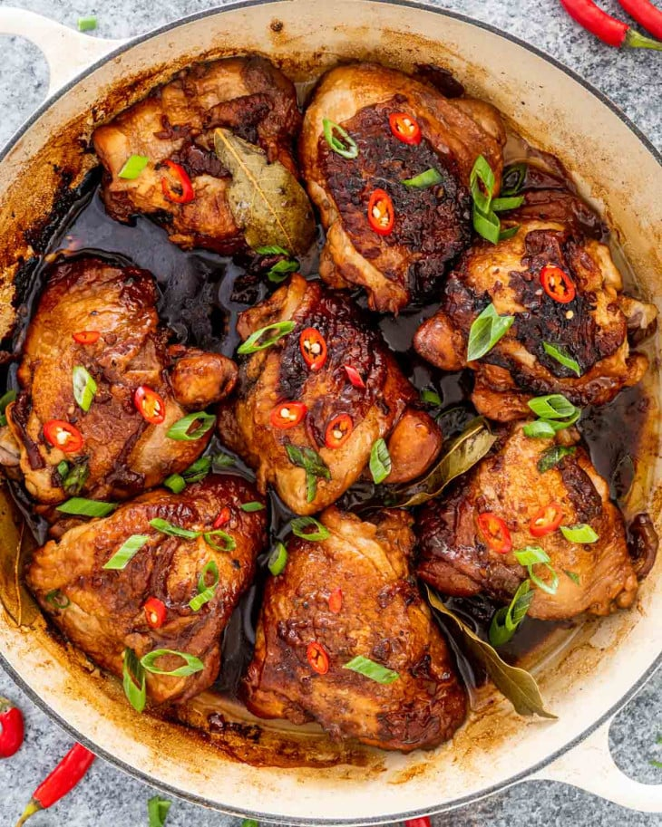

Adobo Recipe

Description
Adobo is a traditional Filipino dish known for its savory
and slightly tangy flavor. It typically consists of meat
(chicken. pork, or a combination of both) marinated of soy
sauce, vinegar, garlic, various spices. The marinated
meat is then simmered until tender, creating a rich and
flavorful dish that is enjoyed by many. The balance of
salty, sweet, and tangy flavors makes adobo a staple in
Filipino cuisine.
Ingredients:
-
Chicken:You can use whole chicken cut
into serving pieces or specific parts like thighs or drumsticks
-
Soy Sauce:About 1/2 to 3/4 cup, depending
on your taste preferences
-
Vinegar:About 1/4 to 1/2 cup. White vinegar or
cane vinegar is commonly used
-
Garlic:Several cloves, minced or crushed
-
Bay leaves:2 to 3 pieces
-
Whole Peppercorns:About 1 teaspoon
-
Oil:1-2 tablespoon, for sauteing
-
Onion:1 medium-sized oion, sliced
-
Water:About 1 cup, or as needed
Optional Ingredients
-
Potatoes:Some recipes include potatoes,
peeled and sliced.
-
Hard-Boiled Eggs:These can be added towards
the end of cooking.
-
Coconut Milk:Some variation include coconut
milk for a riched flavor. And we can call the dish to be
"Ginataang Adobo"
Instructions:
-
Marinate the Chicken:
In a bowl, combine the chicken, soy sauce, vinegar,
minced garlic, and peppercorns. Let it marinate for at least
30 minutes to allow the flavors to penetrate the meat.
-
Saute the Aromatics:
In a wide pan, heat oil over medium heat. Saute sliced
onions until translucent.
-
Cook the Chicken:
Add the marinated chicken to the pan. Cook until the
chicken is browned on all sides.
-
Simmer:
Pour in the marinade, add bay leaves, and add water.
Simmer until the chicken is tender and the sauce has reduced.
Adjust the seasoning to taste.
-
Optional Additions:
Add potatoes or hard-boiled eggs if desired. Simmer until
they are cooked through.